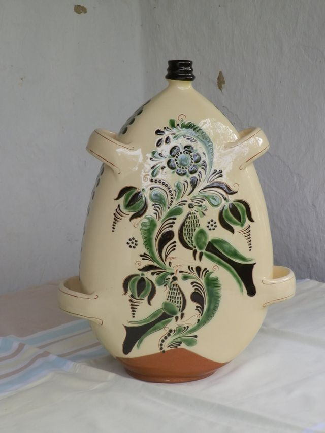

Kapcsolat
Kérem, látogasson el műhelyembe
A kerámia tárgyakat telefonos vagy személyes egyeztetés alapján lehet megrendelni, és a vásárláshoz is érdemes előre időpontot egyeztetni.


Telefon
+36 59 351 483 +36 70 321 9253Vezetékes és mobil. Telefonos egyeztetés a vásárláshoz, megrendeléshez és a Gyűjteményes Ház látogatásához.
Látogatás és vásárlás
Előzetes egyeztetéssel
- Műhely
- 5350 Tiszafüred, Belsőkertsor utca 4/a. Vásárolni a fazekasműhelyben lehetséges; a tervezhetőség érdekében előre egyeztessünk időpontot.
- Gyűjteményes Ház
- 5350 Tiszafüred, Belsőkertsor u. 5. Előzetes telefonos egyeztetéssel látogatható. A házról →
- Belépődíj
- A honlap szerint felnőtteknek 1000 Ft, diákoknak 500 Ft. A díj aktualitását érdemes egyeztetéskor megerősíteni.
- Megrendelés
- A kerámia tárgyak telefonos vagy személyes egyeztetés alapján rendelhetők, egyedi felirattal és igény szerinti díszítéssel is. Az alkotások →
Térkép
A műhely helye
A jelölő a korábbi honlap térképén a műhely helyeként megadott pontot mutatja.
Kapcsolat
Kérem, a tervezhetőség érdekében előre egyeztessünk időpontot.